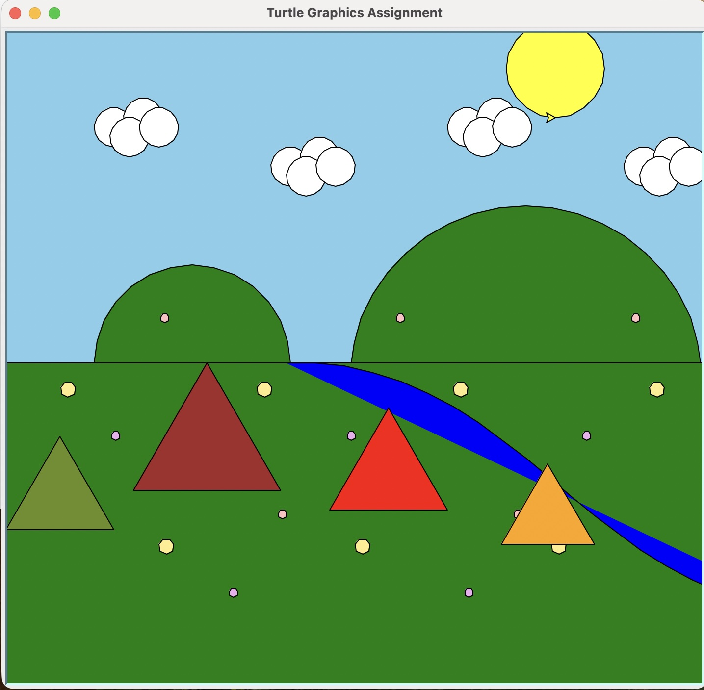

About the Project
This project uses Python to create a camping scene with Turtle graphics. The original drawing steps were refactored into helper functions so repeated elements, such as flowers, clouds, and tents, could be added more efficiently and adjusted with fewer changes.
The final version shows generalizing functions, adding complexity, and using loops to place multiple related objects across the scene.
Sample Code
The tent function is one of the most complex parts of the project. It stores tent colors and layout values, then uses a loop to draw several tents with different positions, sizes, and colors.
def tent(number_of_tents=1):
"""Draw one or more tents with varied layouts and cycling colors."""
t = turtle.getturtle()
tent_colors = ["brown", "red", "orange", "olivedrab"]
tent_layouts = [
(-230, -120, 150),
(-30, -150, 120),
(145, -185, 95),
(-360, -170, 110),
(270, -160, 105),
]
for i in range(number_of_tents):
x, y, size = tent_layouts[i % len(tent_layouts)]
peak_height = size * math.sqrt(3) / 2
y = min(y, -peak_height)
jump_to(t, x, y)
draw_triangle(t, size, fill_color=tent_colors[i % len(tent_colors)])Final Scene
The finished scene combines the refactored functions into one composition with hills, grass, a river, flowers, clouds, a sun, and several tents.
